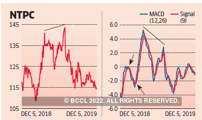

What is Moving Average Convergence Divergence (MACD)?
Trading is all about making good decisions, the better you are at it, the more money you will make. So, what is this MACD thing and how can it help you trade better? There are hundreds of different indicators out there and choosing the right one can be tricky. Moving Average Convergence Divergence, or MACD is a popular indicator that traders use to make informed decisions about their trades.
MACD is an oscillator that measures the difference between two moving averages. The moving averages it uses are 26-day and 12-day exponential moving averages (EMA). It helps traders understand whether the market is overbought or oversold, and also shows the strength of the current trend.
The MACD histogram is a visual representation of the difference between the two moving averages. When the histogram is positive, it means that the 12-day EMA is above the 26-day EMA. This indicates that the market is in an uptrend, conversely, a negative histogram indicates that the market is in a downtrend.
Whether it is stocks or cryptocurrencies, you can use MACD to make better-informed decisions about your trades. It is a versatile tool that can be used in a variety of ways, and it is especially useful in spotting potential trend reversals
What is Moving Average Convergence Divergence (MACD)?
The MACD or Moving Average Convergence Divergence is a trend-following momentum indicator as it shows the connection between two moving averages of a security's price. The MACD is obtained by subtracting the 12-period EMA from the 26-period exponential moving average (EMA) and the result of that calculation is the MACD line.
The MACD indicator is plotted on top of the MACD line. It serves as a trigger to buy and sell signals and to create a nine-day EMA "signal line."
The security may be purchased when the MACD rises above its signal line and sold or shorted when the MACD falls below this line. In general, MACD indicators are interpreted in a variety of ways, crossovers, divergences, and abrupt rises or falls are the most popular ones.
As you can see, the MACD indicator is a versatile tool that can be used in many different ways. It is especially useful in spotting potential trend reversals. If you are new to trading, or if you are looking for a new indicator to add to your toolkit, the MACD is a great choice. It is easy to use and understand, and it can help you make better-informed decisions about your trades.
Moving Average Convergence Divergence or MACD: How does it work?
Understanding how MACD works is essential to being able to use it effectively. MACD is a trend-following momentum indicator that shows the connection between two moving averages of a security's price. You have to subtract the 12-period EMA from the 26-period exponential moving average (EMA) to calculate MACD.
Once you have done that, you will get the MACD line. The signal line is the 9-period EMA of MACD and you can plot it on the MACD line to get the MACD histogram.
The general idea behind MACD is that it uses two moving averages that converge, diverge, and then converge again. When the two moving averages diverge, it indicates increased momentum. When they converge, it indicates decreased momentum.
Here is the formula of MACD:
MACD= 12 EMA-26 EMA
Understanding how MACD works is simple. When the MACD line crosses above the signal line, it's a buy signal, as it indicates increased momentum. When the MACD line crosses below the signal line, it's a sell signal, as it indicates decreased momentum.
The MACD histogram is used to fine-tune those signals. When the histogram is positive, it means the MACD line is above the signal line, indicating increased momentum. When the histogram is negative, it means the MACD line is below the signal line, indicating decreased momentum.
You can use the MACD to find buy and sell signals, as well as to gauge the strength of a trend. You can also use it to time your entries and exits.
There are a few different ways to use MACD. One way is to look for crossovers. When the MACD line crosses above the signal line, it's a buy signal, and when it crosses below the signal line, it's a sell signal.
You can also look for divergences. A bullish divergence occurs when the MACD line makes a new high but the price doesn't. This is an indication that the trend is losing steam and that a reversal might be around the corner.
A bearish divergence happens when the MACD line makes a new low but the price doesn't. This is an indication that the trend is losing momentum and that a reversal might be in the cards.
How MACD can help in trading stocks?
As we mentioned, MACD is a trend-following momentum indicator. This means that it will help you identify trends, as well as reversals. When it comes to stocks, you can use MACD to find entry and exit points. The entry point is the point when the stock prices are low and the selling pressure is high. On the other hand, the exit point is when the stock prices are high and the buying pressure is high.
So when you have a clear idea of when to buy and when to sell, you will be able to make profits more easily. MACD is also helpful in confirming trends. For example, if the stock prices are going up and the MACD line is going up as well, it's a confirmation that the trend is indeed up.

How MACD can help in trading cryptocurrencies?
Cryptocurrencies are somewhat similar to stocks. They are also traded on exchanges and they are also subject to market volatility, however, there are some differences as well.
For one thing, cryptos are much more volatile than stocks. This means that the price movements are much more dramatic and that the trends are also more pronounced. This is where MACD can be helpful, this is because it can help you identify those trends more easily.
Another difference is that cryptos are not regulated by any central authority. This means that there is no one to control the supply and demand. As a result, the prices are determined by the market forces of supply and demand. MACD can also be helpful in this regard, as it can help you identify those market forces.
You need to be careful while making decisions about cryptocurrencies because they are very volatile, and you can lose a lot of money if you make the wrong decisions. That being said, MACD can be a helpful tool in making those decisions.

So now that we know one of two things about MACD – how it works and what are its benefits, let's take a look at some of the benefits of MACD:
1. MACD helps to capture the trends
Whether it's stocks or crypto, trends are the key to making profits. MACD is a trend-following indicator, which means that it will help you identify those trends. Once you have identified the trends, you can make the necessary decisions to buy or sell.
2. MACD helps to make better decisions
MACD can help you make better decisions because it takes into account the momentum of the market and it will also help you confirm trends. This means that you will be able to buy or sell at the right time, and you will be able to avoid making bad decisions.
3. MACD is easy to use
Trading indicators can be confusing sometimes but when it comes to MACD, it is pretty straightforward. All you need to do is to follow the MACD line and the signal line. When the crossover, it's a buy or sell signal. And if there's a divergence, it's an indication that the trend is losing momentum and that a reversal might be in the cards.
4. MACD is suitable for all levels of traders
MACD is suitable for all levels of traders, whether you're a beginner or an expert. This is because it is a pretty simple indicator to use. Even if you're a beginner, you will be able to understand how MACD works and what are its benefits. You can easily make sound decisions and avoid making bad ones.
4. MACD is suitable for all levels of traders
MACD is suitable for all levels of traders, whether you're a beginner or an expert. This is because it is a pretty simple indicator to use. Even if you're a beginner, you will be able to understand how MACD works and what are its benefits. You can easily make sound decisions and avoid making bad ones.
What's Screener.plus?
Screener.plus is an advanced trading tool that allows you to screen for stocks and cryptos using a variety of criteria. You can use it to find stocks and cryptos that are undervalued or overvalued. Screener.plus is a very powerful tool that can help you make better decisions when it comes to trading stocks.
Here are some of the key benefits/features of Screener.plus
1. Access to cryptocurrencies:
If you are looking for a tool that will allow you to screen for cryptos, then Screener.plus is the perfect tool for you. It gives you access to a wide range of cryptos, and you can use a variety of criteria to find the ones that you want to trade.
2. Easy-to-use interface:
Screener.plus has an easy-to-use interface that makes it easy to use for all levels of traders. Even if you're a beginner, you will be able to understand how Screener.plus works.
3. Powerful screening criteria:
Screener.plus allows you to screen for stocks and cryptos using a variety of criteria. You can use fundamental criteria or technical criteria. You can also use a combination of both to find the stocks and cryptos that you want to trade.
4. Live prices:
Screener.plus gives you access to live prices so that you can make sound decisions when it comes to trading. It's really important to have access to live prices so that you don't make any bad decisions.
5. Indicators:
Screener.plus comes with a wide range of indicators that you can use to find the stocks and cryptos that you want to trade. These indicators include MACD, RSI, and many others.
Conclusion
As you can see MACD is one of the most popular indicators that is used by traders. It's pretty easy to use, and it can help you make better decisions when it comes to trading stocks or cryptos. If you're looking for a tool that will help you find the stocks and cryptos that you want to trade, then Screener.plus is the perfect tool for you. Also, keep in mind that only using tools won't make you successful as a trader, you have to put in the work and learn as much as you can about trading.